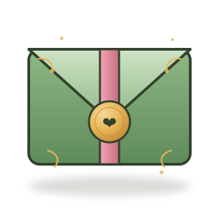
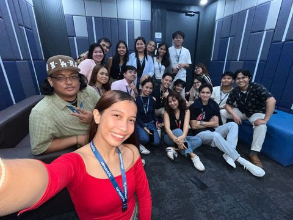

Wait lang bagal ng data mo, hmp
0%

tap to open
Hi, Allysa!
Volume up! Basahon mong maray! HAHAHAH
Take a pause, and read this first.
One last thing…
🎀 Click on each pictures! 🎀

Wave 113C, you guys are important to me. Lalo na yang naka-red <33
Happy Birthday, Allysa!
Hi!
I hope you're having a good day. Lagi kitang napapanaginipan di ko napansin bigla na lang gumagawa na ako nito hahahah.
Anyways, I wish you all the best BFF #3, 1st si Cherry and 2nd si Naj hehe. Pang 3rd ka lang na BFF ko pero lamang ka naman kasi ikaw lang ginawaan ko neto, yii.
Sa oras na ma-receive mo to sana nasa CNX pa tayo both and medyo sanay na sa mga concerns ni member. Pero I think I'll give this to you right after nesting, not sure, medyo advance sa bday mo pero okay na yan. Uhm, good luck sa life I guess? Charot. Sana pumaldo na tayo and mahanap na natin kung para sa anong work ba talaga tau hyst.
Konting chismis kasi sayang naman ng background music baka ambilis mo magbasa. TAGALAN MO PAGBABASA, NAKA LOOP YAN!
So, nung magkakasama na tayo sa training room tapos medyo nagkakakilala na, lalo na nung magkatabi na tayo, potek naaalala ko sayo si ate! Hahahah legit yan.
Kaya iniisip ko na parang madali lang tayo maging close. Mali ako. Gusto kita kilalanin lalo, tipong gugustuhin ko rin lahat ng favorites mo or at least malaman ko lang para may mapag usapan naman tayo kahit papano, ganun. Kasi naman pag kausap kita ambilis ko mawalan topic lalo pag in person kasi heheya aquOh..,, AS IN!! Garo ko bakla ang ayp. Pero I really really really want you to tell me about your day everyday, your favorite dish, color, things, movies, hobbies, aything, whatever at all. Disturb me please, tell me about it all. There's nothing I would love more.
But baasically nganga ako in person, so bumabawi ako sa text (instagram, not fb kasi di mo ko nirereplyan lalo dun). Tipong kung anu-anong mga traumas and shits sa buhay ko kinukuwento ko, di ba??? Pati nga ex ko na parang tanga nikwento ko out of nowhere wtf. Ang cringe ko sa part na yon. Wala talaga ko ma-topic and desperate ako maging interested ka sa mga sinasabi ko HAHAHAH. Pero ako lang naging comfy sayo, never ka nag chika sa akin! Gusto ko rin naman pag kuwentuhan mo para kahit konti mafeel kong may tiwala ka sa akin. Pero okay na yun, ako na lang magbuhat ng convo and everything sanay naman ako jan hayst jk. Pero yo, I'm here. Anytime for you, cuh! Chat ka lang sa ig or kahit saan. Masipag ako mag reply... sa'yo.
Hindi kita crush na gaya ng mga crush ko nung high school. HINDI TALAGA. Explain ko kung ano ka sa akin as easy as I can. I'm not good with words so bear with me. So basically, u gib me hapi. Tipong di ko pansin na naka smile na ko pag nakikita ka, lalo pag nakikita kang naka smile, pag naririnig ka, pag naaamoy ka, tangina napapa smile ako bigla. There's just something in your voice that's driving me crazy. Speak, laugh, do whatever sound, even just fucking swear idgaf, your voice is really making me breathless! If there's heaven on earth that would be beside you with your scent and lovely voice hihi. Parang gusto ko bugbugin lahat ng bumabadtrip sayo tas mga nang aaway and everything. Gusto ko protektahan lang yang smile mo and magstay ka lang na ganiyan. Makita ko lang na naka smile ka, or marinig na tumatawa ka nung trademark mo na tawa na may singhot at pusngak, sa loob loob ko ang saya ko na rin. Kahit di ako kasali pag nag uusap tas naglalaro kayo, nagtataklob na lang ako ng jacket or pumapasok sa t-shirt ko para di makita na naka smile na rin ako HAHAHAH. Di ko alam, kaka yii nila siguro nadala din ako? Pero hindi e, eventually mapapansin ko rin namang natutuwa ako sayo e. Nakakatuwa ka kasi hawig mo posa namen jk. Ang hirap kasi eh mas malaki ka sakin pero nakukyutan akong masyado sayo, legit. Di ko nga kaya kahit magjoke lang na hindi ka cute eh, ang herap hahahah. Iba epekto ng cuteness mo sa akin beh, parang binabalik niya ko sa pagka-bata na walang inatupag kundi magpakasaya lang tas walang problema ganun. Dun pa lang alam ko nang dapat ikeep and angkinin na kita HAHAHAH kaso shet cnu b nmn aquOhh.,?? Konting seriously mode lang, alam kong di ko ikaw deserve, aww. Masyado akong makasalanan and masyadong demonyo para sayo, lam ko yan. Di ko deserve mafeel yung happiness and excitement na nafefeel ko sayo. Kaya wala rin naman akong inaasahan, AWWW. Matagal ko nang napagtanto na solo akong tatanda (char samahan mo ako). Pero, damn. I really love thinking, no, imagining, all the things that we could be. The places that we would go to, the things that we would do, the house that we're gonna have, how happy we would be. Pero I know that it's going to be super selfish. Kasi ako lang yung magiging masaya (siguro). Kaya matagal ko na rin inekisan plano kong kidnappin ka na lang hehe. Kung yung mga crush ko before napapa smile ako, kilig, and all, ikaw naman you make me feel contented and happy with myself. Ganiyan. ~ I like me better when I'm with you, kanta yarn. Parang ayoko nang may makilala pa na iba, ayoko nang magka crush. Ganun! Gusto kitang i-baby lagi kahit mas malaki ka sakin. Hirap talaga iexplain (this is just my mind speaking btw, not doing any edits or sum' shit bruh). In a way you make me feel complete(?) So corny pero ganun e. Parang gusto kita piliin lagi, ganun! Yun talaga! Me wants you, but me is not deserve u. ~ But if you give me half a chance I'll show... kanta ulit yarn. Pero bigyan mo lang talaga, charot! Hahahah. I'm just so happy having these feelings that you give me, not even thinking that you will someday somehow reciprocate them. Just admiring you from afar brings me a lot of joy in itself and again it'll be too selfish of me to even wish for you to feel the same. This is a beautiful thing, this feeling I have for you (plural dapat talaga kasi marami kang pinapafeel), how beautiful it is to admire somebody or even love them without the assurance that they feel the same way about you too. Kunwari na lang happy ako kahit di ako umaasang may chance ako sayo hahahah. But please don't make my feelings go away. Please don't make me go away. Iyak talaga ko neto. Dami kong sinasabi noh? My way of showing you that I'll be the over-explaining to your overthinking.
Sana di naman creepy huhu. Or sana dae man kadiri! Hayop. Super trying hard akong di maging cringe as in. Pero la eh. Ibang tama ata to, Ali. Pero di kita crush ha, gusto lang kita ipakilala kay mama. Tas iuwi na kita. Ganun HAHAHAH. Pwede ka ba? Kailangan namin helper maglaba, may washing machine naman kami. Fb fb ka lang habang naghihintay matapos. Charot bat naman kita papagurin. Iuuwi kita para pagsilbihan. HUY!! HAHAHAH.
Wala na corny na masyado. Sensya na sinusulit ko lang, mamamatay muna ko bago ko masabi mga yan in person ih. You just got me smiling on my phone too damn much! Sucks because I know this shit's gonna hurt lol.
Pero tampo ako sayo hmp. Di mo nireplyan mga reels ko September 9, 2026! Bago mag bday si JC! Pero okay lang naman busy naman ako gumawa nito so walang time for reels.
Dami ko pang gusto sabihin kaso baka isipin mo crush kita... di naman eh. Konti lang. DI NGA KITA CRUSH, DAPAT BILHAN NA KITA SINGSING. GANUN! HAHAHAHAHA. Charot ang aggressive grabe. Sabi ko walang edit edit to, wala talaga. Nagdadagdag lang ako kapag may naiisip ako sabihin. So eto, I like you. I was just afraid to admit that to myself kasi baka ireject mo ko or ifriendzone. But fuck that shit bro. I don't care at this point. I need you to know I like you. You're special (child) to me. I wanna make myself better for you. You deserve the best, so I will become the best. WOAH! HAHAHAH. Sana wala kang kalandian (I can treat you better), sana di mo na namimiss yung nang ghost sayo (di natin siya bati), sana ako na lang gawin mong crush mo (kasi oo na nga crush nga kita), and please don't be in love with someone else (Taylor Sheesh). Pero ikaw, alangan naman pilitin kita di ba? (AKO NA LANG KASI char). Once again, I really like you Allysa. All love songs I hear suddenly became about you. I really want to know you more. I care about you, big time. It's such a shame that I'm an insecure lil' bitch that does not have the courage to tell you all of this in person, tsaka baka macreepyhan ka, so valid yan! Hehe. Butttt, you don't have to feel the same. My feelings for you will not be lessen for it. I just want you to know that there's someone out there (me) that cares about you deeply. Liking me back does not really matter, I like you, a loooot. Now you know it, that's what matters.
I appreciate you listening to my bullsh*#%ts in life. Whatever happens, sana dehins tayo maging others sa isa't isa.
I hope it made you smile even a bit. Thank you for always reacting to all of my reels, yo! (Marami pa kong naka store na reels di ko masend sayo kasi medyo may hiya pa)
That's all for today. Please remember that you can always give me a call/text back if you have any other more concerns. You can also send me your feedback about the service I had provided you today through Instagram or Facebook, 5 hearts being the highest (YES!!!) and 1 being the lowest (no). The website would be the link you used to open this letter. Thank you for letting me assist you today, please give me some of your time in exchange for all of mine. My name is Adi, hoping to see you soon.
Yours truly,
Truly yours.